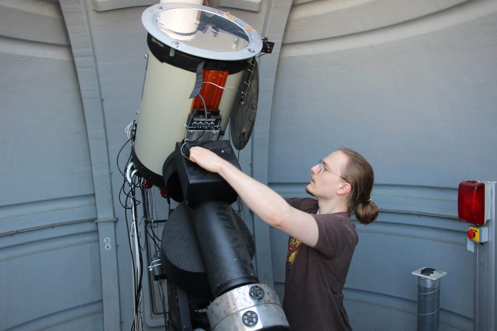

General information
 Contact:
Francis Fortin
Laboratoire APC, Université Paris Cité
39 Rue Hélène Brion, 75013 Paris
Lamarck A Building Floor 7, office 711
fortin@apc.in2p3.fr
ffortin.sci.edu@gmail.com

CV
PhD manuscript
I am a post-doc researcher at the Astroparticle and Cosmology lab from the Université Paris Cité, funded by the LabEx UnivEarthS on the interface project
"Binary rEvolution: from binary evolution towards merging of compact objects".
I am interested in the observation of X-ray binaries in optical/infrared in order to better constrain their environnement, transient nature as well as their role as gravitational wave merger progenitors.
I have worked with data coming from prestigious facilities such as ESO/VLT (X-Shooter, ISAAC, FORS2 and VIRCAM) as well as the latest release from the Gaia satellite. I am a member of the ENGRAVE collaboration in the operations team contributing with my expertise on VLT/X-Shooter and FORS2.
CNRS press release (26/09/2022)
Massive stars are born and evolve through phases that are yet to be entirely constrained. Using astrometric data from Gaia, it is possible to retrace the history of massive stars in binaries and explain the impact of specific evolutionary mechanisms such as supernova events inducing migration through the Galaxy.
Learn more:
À l'origine des systèmes binaires d'étoiles, une histoire de couple (FR)
At the origin of the binary systems of stars, a couple’s story (EN)
Radio podcast "Recherche en cours" (Aligre FM 93.1, 25/03/2022)
Latest news from the Cosmos, a discussion about day-to-day life in an astrophysics lab. Available on Apple podcasts (in French).
Learn more:
Dernières nouvelles du Cosmos (FR)
"Binary rEvolution: from binary evolution towards merging of compact objects".
I am interested in the observation of X-ray binaries in optical/infrared in order to better constrain their environnement, transient nature as well as their role as gravitational wave merger progenitors.
I have worked with data coming from prestigious facilities such as ESO/VLT (X-Shooter, ISAAC, FORS2 and VIRCAM) as well as the latest release from the Gaia satellite. I am a member of the ENGRAVE collaboration in the operations team contributing with my expertise on VLT/X-Shooter and FORS2.
CNRS press release (26/09/2022)
Massive stars are born and evolve through phases that are yet to be entirely constrained. Using astrometric data from Gaia, it is possible to retrace the history of massive stars in binaries and explain the impact of specific evolutionary mechanisms such as supernova events inducing migration through the Galaxy.
Learn more:
À l'origine des systèmes binaires d'étoiles, une histoire de couple (FR)
At the origin of the binary systems of stars, a couple’s story (EN)
Radio podcast "Recherche en cours" (Aligre FM 93.1, 25/03/2022)
Latest news from the Cosmos, a discussion about day-to-day life in an astrophysics lab. Available on Apple podcasts (in French).
Learn more:
Dernières nouvelles du Cosmos (FR)